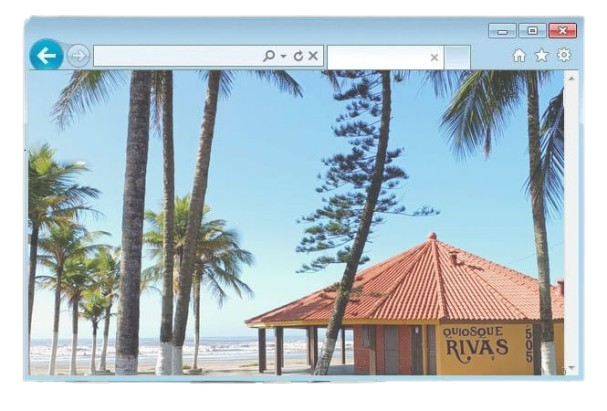

População: ~100 mil habitantes Localização: litoral de São Paulo
(Baixada Santista) Bioma: Mata Atlântica Fundação: uma das cidades
mais antigas do Brasil (1532) Aniversário: 22 de abril
Característica: estância balneária e histórica

A cidade de Itanhaém foi fundada em 1532, sendo uma das mais antigas
do Brasil e um dos primeiros núcleos de colonização portuguesa no
território.
Sua origem está diretamente ligada às primeiras expedições organizadas
por Martim Afonso de Sousa, que teve papel fundamental no início da
ocupação do litoral paulista.
Desde seus primeiros anos, Itanhaém desempenhou um papel relevante na
expansão da colonização, servindo como base para a exploração do
interior e para a consolidação da presença portuguesa na região.
Durante o período colonial, chegou a ter grande importância
administrativa, sendo sede da Capitania de Itanhaém, o que reforça sua
relevância histórica no contexto paulista.
O crescimento inicial da cidade esteve ligado principalmente à
agricultura e às atividades litorâneas, como a pesca, que garantiam a
subsistência da população local.
Com o passar do tempo e a modernização das vias de acesso, Itanhaém
passou por transformações significativas.
A partir do século XX, o município começou a se destacar como destino
turístico, atraindo visitantes por suas praias, paisagens naturais e
patrimônio histórico.
Hoje, Itanhaém é reconhecida como uma importante cidade do litoral
paulista, que preserva sua rica história ao mesmo tempo em que se
desenvolve como polo turístico.
A partir do século XX, o município começou a se destacar como destino
turístico, atraindo visitantes por suas praias, paisagens naturais e
patrimônio histórico.
Hoje, Itanhaém é reconhecida como uma importante cidade do litoral
paulista, que preserva sua rica história ao mesmo tempo em que se
desenvolve como polo turístico.
Economia baseada no turismo e comércio Forte presença de visitantes
no verão Praias, rios e patrimônio histórico atraem turistas Turismo
religioso também é importante
População urbana em crescimento Economia influenciada pela
sazonalidade do turismo Desafios sociais ligados ao crescimento
urbano Aumento populacional na temporada de verão
Presença de praias, rios e morros Áreas de Mata Atlântica preservada
Manguezais e regiões costeiras Relevo com planícies e elevações
próximas ao mar
Centro histórico colonial
Convento de Nossa Senhora da Conceição
Praia dos Sonhos
Morro do Paranambuco